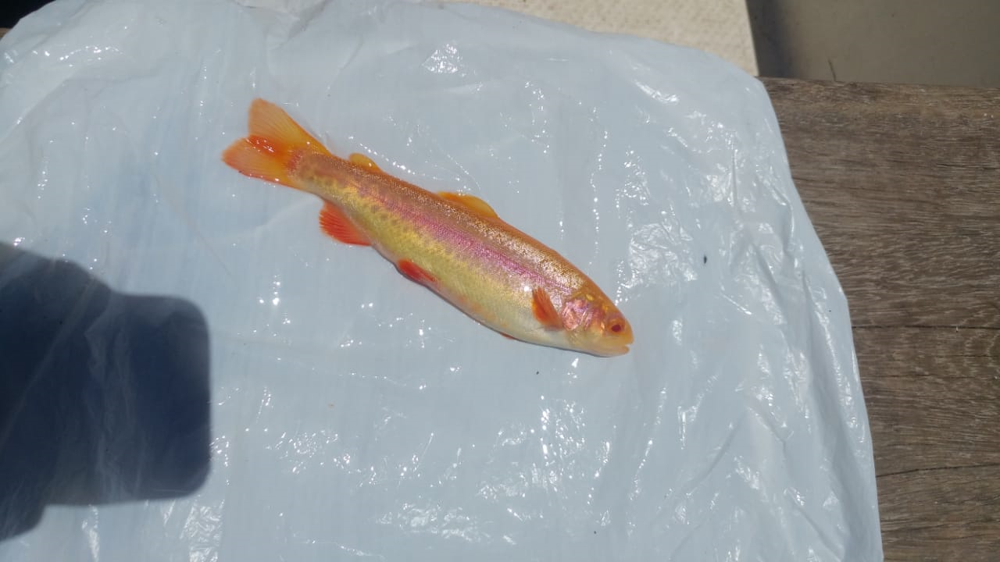

6 2.2. Filogénesis.
A inicios del Cretácico aparecieron los ancestros de los salmónidos hace aproximadamente entre los 60 y 135 millones de años en el hemisferio Norte en aguas dulces, empezaron a sufrir diferencias en la era terciaria (Mioceno) y a principios del Cuaternario en el Pleistoceno aparecieron los géneros de los salmónidos actuales cuyas diferenciaciones fueron producto de la glaciación, pos glaciación y separación de continentes (Breton, 2007, p.25). Bagliniére, (1991) afirma: En la última glaciación algunas poblaciones quedarían aisladas y otras mostraron un carácter migratorio. # 2.3. Distribución geográfica. En Europa (Francia) nació la piscicultura y se extendió por toda Europa (Tessier 1967), esta actividad se ha extendido por todo el mundo, hallándose en países como Canadá, Estados unidos, Japón, Australia, Nueva Zelanda, Sudáfrica, Chile, Noruega donde ha tenido un gran crecimiento, entre otros países. Es en el siglo XIX con la reproducción artificial de la trucha nace la piscicultura y se extiende (Breton, 2007, p.26). (Berra, 1981) citado por Palma et al, 2002. Menciona que en Sudamérica la fauna íctica continental cuenta con un gran número de familias en el mundo. Se han registrado 46 familias, de las cuales 32 son endémicas, con unas 2.400 a 2.700 especies conocidas (Gery 1969) 2.4. Características morfológicas de la trucha arcoíris . Los peces son animales de sangre fría, la trucha arcoíris pertenece al grupo de los osteistios, la forma de su cuerpo es aerodinámica. La piel es la primera barrera de protección, éste segrega una sustancia viscosa, también se encuentran las escamas formando una cubierta de protección, su cuerpo está dividido en 3 partes cabeza, tronco y cola. Una trucha posee siete aletas, además de la cola, sus aletas tienen funciones particulares que le permiten hacer maniobras de su cuerpo además de brindarle estabilidad, su esqueleto óseo se compone de una columna vertebral que posee de 28 a 29 vertebras unidas por el tejido conectivo; presenta un sistema circulatorio sencillo, su riñón es un órgano alargado ubicado debajo de la espina dorsal y encima de la vejiga natatoria, extendiéndose desde la cabeza hasta la cola, para los peces de agua dulce este órgano es más importante ya que por ahí se elimina que el exceso de agua, también se sabe presetnan células gustativas y estudios recientes ha demostrado que los peces son capaces de distinguir 4 sabores básicos (dulce, salado, ácido y amargo también pueden percibir la composición química del agua, esto es muy importante para los peces migratorios como el salmón que sigue la gradiente de olor reconociendo su rio natal a donde se dirige para desovar La línea lateral es un sentido exclusivo de los peces, se ubica en la parte central es de color rosada y su cuerpo se encuentra moteado de color gris para esta variedad de trucha, comienza en la cabeza y termina en la base de la cola sirve para detectar pequeños cambios en su medio, como cambios de presión del agua, la línea lateral es un sistema de poros que se encuentran unidos entre si por una red de pequeños canales a lo largo del cuerpo, cuando el pez se desplaza el agua se mueve , estas ola de presión que se producen por su desplazamiento refleja la ausencia de obstáculos y retorna al pez ante cualquier obstáculo

Figura : Trucha dorada su cuerpo está dividido en cabeza, cuerpo y cola, presenta el cuerpo moteado de color gris y una línea lateral con 7 aletas además de la cola. Fuente propia.